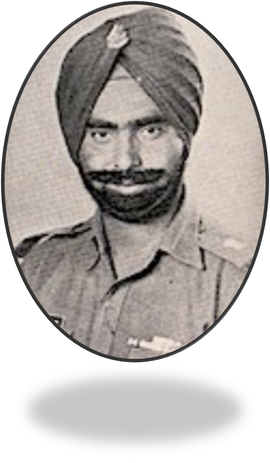

|  | |
In the wee hours of 4 th December 1971, the Pakistani Army crossed Border Pillar 635 in Rajasthan and marched towards Longewala. They rumbled into the Indian territory with a regiment of 48 tanks and over 3500 men. At the post of Longewala were only 120 infantry soldiers of the Apha Company of 23 rd Punjab Regiment led by Major Kuldip Singh Chandpuri.Thus, began one of the greatest battles in the history of post-partition India: The Battle of Longewala, Major Kuldip Singh Chandpuri and his men stood the ground against such formidable odds. Not only did he and his men successfully engage the Pakistani forces, but they also stalled their progress through critical hours until dawn, when the Indian Air Force swopped in.For India's victory in this battle, Major (later Brigadier) Kuldip Singh Chandpuri was awarded the prestigious Maha Vir Chakra. |
In 1997, film maker JP Dutta depicted the epic battle in his blockbuster film, Border. "GRIT, GUTS, GLORY" is the actual story of the hero of Longewala and his valiant men and the priceless lessons they teach us - that of preserving one's inegrity, honour and self-respect.
Grit Guts Glory,is an amazing book. Dedicated to the Brave Soldiers who sacrificed their lives for our country. The book tells the story of the 120-strong Indian infantry unit that held off a much larger Pakistani force at the Longewala post in Rajasthan on December 4, 1971. Writer does an excellent job of bringing the battle to life, describing the fighting in vivid detail. |
Best Book, I have ever read. This book is full of Nationalism, Bravery, Courage, Motivation, Faith and many other feelings that cannot be explained in words.